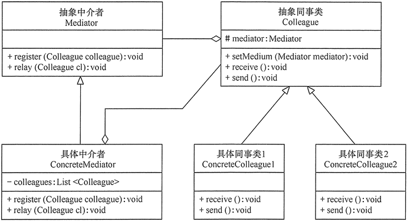

中介者模式理解剖析以及应用

中介者模式
定义一个中介对象来封装一系列对象之间的交互，使原有对象之间的耦合松散，且可以独立地改变它们之间的交互。中介者模式又叫调停模式，它是迪米特法则的典型应用。
中介者模式是用来降低多个对象和类之间的通信复杂性。这种模式提供了一个中介类，该类通常处理不同类之间的通信，并支持松耦合，使代码易于维护。
中介者模式属于行为型模式。
意图
- 用一个中介对象来封装一系列的对象交互，中介者使各对象不需要显式地相互引用，从而使其耦合松散，而且可以独立地改变它们之间的交互。
解决问题
对象与对象之间存在大量的关联关系，这样势必会导致系统的结构变得很复杂，同时若一个对象发生改变，我们也需要跟踪与之相关联的对象，同时做出相应的处理。
何时使用？
多个类相互耦合，形成了网状结构。
应用环境举例
- 中国加入 WTO 之前是各个国家相互贸易，结构复杂，现在是各个国家通过 WTO 来互相贸易。
- 机场调度系统。
- MVC 框架，其中C（控制器）就是 M（模型）和 V（视图）的中介者。
优点
- 类之间各司其职，符合迪米特法则。
- 降低了对象之间的耦合性，使得对象易于独立地被复用。
- 将对象间的一对多关联转变为一对一的关联，提高系统的灵活性，使得系统易于维护和扩展。
缺点
中介者会庞大，变得复杂难以维护。
类图
- 抽象中介者（Mediator）角色：它是中介者的接口，提供了同事对象注册与转发同事对象信息的抽象方法。
- 具体中介者（Concrete Mediator）角色：实现中介者接口，定义一个 List 来管理同事对象，协调各个同事角色之间的交互关系，因此它依赖于同事角色。
- 抽象同事类（Colleague）角色：定义同事类的接口，保存中介者对象，提供同事对象交互的抽象方法，实现所有相互影响的同事类的公共功能。
- 具体同事类（Concrete Colleague）角色：是抽象同事类的实现者，当需要与其他同事对象交互时，由中介者对象负责后续的交互。
实现
- 抽象中介者
1
2
3
4abstract class Mediator {
public abstract void register(Colleague colleague);
public abstract void relay(Colleague cl); //转发
} - 具体中介者
1
2
3
4
5
6
7
8
9
10
11
12
13
14
15
16
17
18
19import java.util.*;
class ConcreteMediator extends Mediator {
private List<Colleague> colleagues = new ArrayList<Colleague>();
public void register(Colleague colleague) {
if (!colleagues.contains(colleague)) {
colleagues.add(colleague);
colleague.setMedium(this);
}
}
public void relay(Colleague cl) {
for (Colleague ob : colleagues) {
if (!ob.equals(cl)) {
((Colleague) ob).receive();
}
}
}
} - 抽象同事类
1
2
3
4
5
6
7
8abstract class Colleague {
protected Mediator mediator;
public void setMedium(Mediator mediator) {
this.mediator = mediator;
}
public abstract void receive();
public abstract void send();
} - 具体同事类
1
2
3
4
5
6
7
8
9
10
11class ConcreteColleague1 extends Colleague {
public void receive() {
System.out.println("具体同事类1收到请求。");
}
public void send() {
System.out.println("具体同事类1发出请求。");
mediator.relay(this); //请中介者转发
}
} - 具体同事类
1
2
3
4
5
6
7
8
9
10class ConcreteColleague2 extends Colleague {
public void receive() {
System.out.println("具体同事类2收到请求。");
}
public void send() {
System.out.println("具体同事类2发出请求。");
mediator.relay(this); //请中介者转发
}
} - 测试结果：
1
2
3
4
5
6
7
8
9
10
11
12
13public class MediatorPattern {
public static void main(String[] args) {
Mediator md = new ConcreteMediator();
Colleague c1, c2;
c1 = new ConcreteColleague1();
c2 = new ConcreteColleague2();
md.register(c1);
md.register(c2);
c1.send();
System.out.println("-------------");
c2.send();
}
}1
2
3
4
5具体同事类1发出请求。
具体同事类2收到请求。
-------------
具体同事类2发出请求。
具体同事类1收到请求。
实例
多个用户可以向聊天室发送消息，聊天室向所有的用户显示消息。
我们将创建两个类 ChatRoom 和 User。
User 对象使用 ChatRoom 方法来分享他们的消息。
MediatorPatternDemo，我们的演示类使用 User 对象来显示他们之间的通信。

- 创建中介类
ChatRoom.java1
2
3
4
5
6
7import java.util.Date;
public class ChatRoom {
public static void showMessage(User user, String message){
System.out.println(new Date().toString() + " [" + user.getName() +"] : " + message);
}
} - 创建 user 类
User.java1
2
3
4
5
6
7
8
9
10
11public class User {
private String name;
public String getName() { return name; }
public void setName(String name) { this.name = name; }
public User(String name){ this.name = name; }
public void sendMessage(String message){
ChatRoom.showMessage(this,message);
}
} - 测试
MediatorPatternDemo.java结果1
2
3
4
5
6
7
8
9public class MediatorPatternDemo {
public static void main(String[] args) {
User robert = new User("Robert");
User john = new User("John");
robert.sendMessage("Hi! John!");
john.sendMessage("Hello! Robert!");
}
}1
2Thu Jan 31 16:05:46 IST 2013 [Robert] : Hi! John!
Thu Jan 31 16:05:46 IST 2013 [John] : Hello! Robert!